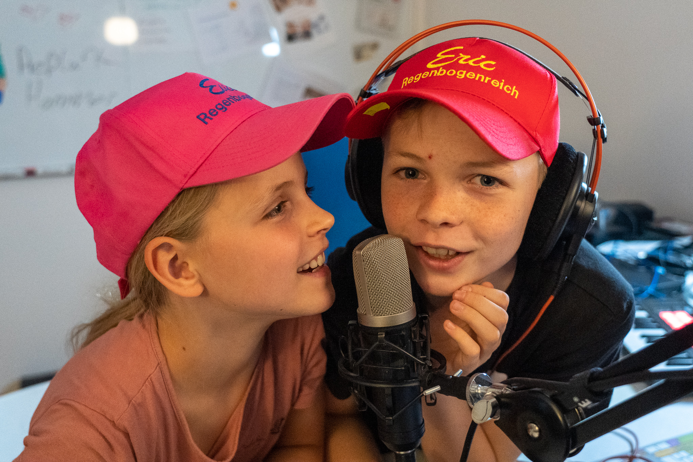
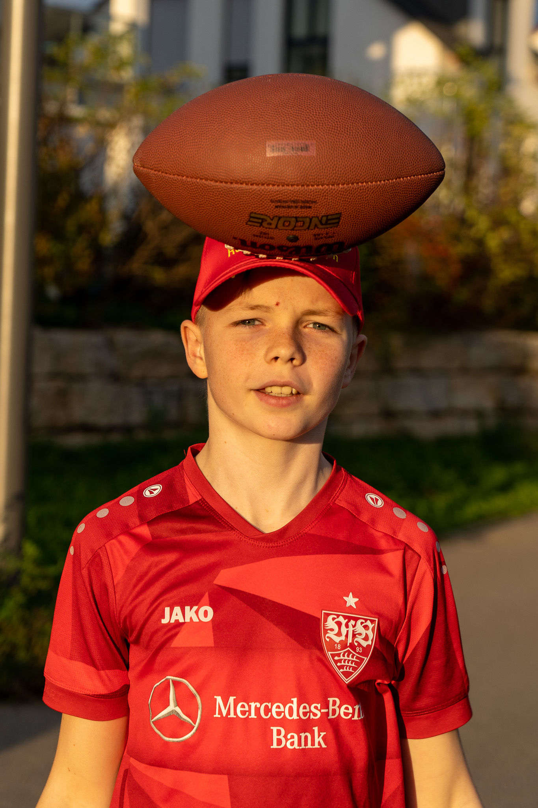

Regenbogenreich
Radio

Das Regenbogenreich Radio erreicht ihr unter folgender Adresse:
regenbogenreich.eu:8000/stream
(Click mich) Sollte es nicht funktionieren, dann wird derzeit nichts gesendet.
Das Radio wird nicht durchgehend senden, sondern wir werden spezielle Programmzeiten und Programmkanäle anbieten. Die Sendezeiten werden wir hier und
bei Matrix/Element veröffentlichen. Viel Spaß beim Zuhören.
Kommende Sendungen
Derzeit ist nichts geplant.Bisherige Sendungen
- 24.10.2022, 19:00-20:00 "Eric und Eva live on Air". Verspätung um 30 Minuten aufgrund eines Mikrofonproblems. Die Aufzeichnung findet ihr bei den Podcasts.
- 19.10.2022, 20:45-22:30 Fußball-Liverübertragung direkt aus dem Stadion: DFB Pokal Vfb vs. Arminia (Keine Aufzeichnung vorhanden.)
- 18.10.2022, 19:30-20:30 Premierensendung von "Eric und Eva live on Air". Eine Aufzeichnung findet ihr bei den Podcasts.
Sendungsformate
Eric und Eva live on Air: Musik, Nachrichten, Sport, Wetter und nicht zu vergessnen: Der Witz des TagesRedaktion
Eric
|  | Ressorts
|
Eva
Ressorts
|
Chrischman
Ressorts
|
Technik
Das RegenbogenReich Radio nutzt den Icecast2 Streaming Server. Zum Mixen und Senden nutzen wir Mixxx. Das Radio kann alternativ zum Webbrowser auch über eine App empfangen werden.Zu den Webradio-Apps zählen: